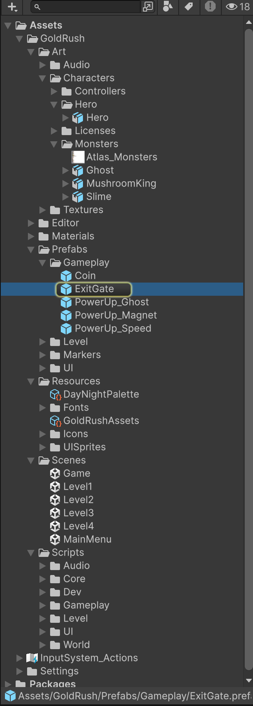
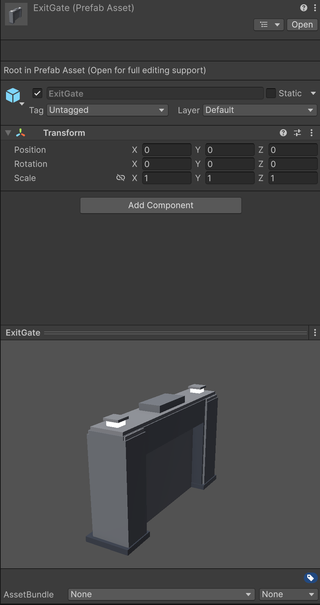

GOLD RUSH · Phase 6
Exit gate, win and lose
You make the provided exit gate work: its door sinks into the floor, the red lights turn green and a pad glows. Then the GameManager gets the full level flow: the gate opens after the last coin, you win on the green pad, you earn stars and gold, and the game saves them and takes you back to the menu. You can also test losing.
1What you need
- Phase 5 is finished: you can collect the 6 coins and the Console counts them.
If you start here, import
GoldRush_Phase05_Coins.unitypackage. - Open the scene
Assets/GoldRush/Scenes/Level1.unity. - The gate model from the starter package:
Assets/GoldRush/Prefabs/Gameplay/ExitGate.prefab. - The north wall of the level (the +Z side) has an 8 m gap in the middle (phase 3). The gate goes there: its posts fill the gap, and its own opening is 5.5 m wide.
- File → Build Profiles → Scene List has
MainMenuandLevel1(phases 1 and 3). The game loads scenes from this list.
New or changed files in this phase:
| File | Type or import? | What it does |
|---|---|---|
World/ExitGate.cs | Type | Opens the gate: the door sinks, the lights turn green. |
Gameplay/GameManager.cs | Type (replace) | Gate, win, lose, stars, best time, save, back to the menu. |
2How a level is won (or lost)
- Intro: the camera flies in (2.8 s). The hero can not move yet.
- Playing: the timer counts. Level 1 has a par time of 40 seconds: a target time for a star.
- All gold collected: the gate opens, you hear the gate sound and the camera shakes.
- Win: walk onto the green pad in front of the gate (closer than 2.4 m). The hero turns and waves.
- Lose: in the real game a monster catches you (phase 7). For now you press L to test it.
The stars:
| Star | You get it when… | Code |
|---|---|---|
| ★ 1 | You collect all gold and escape (always, when you win). | 1 + |
| ★ 2 | Your time is at or under the par time (40 s in Level 1). | parBeaten = Elapsed <= Def.parTime |
| ★ 3 | No monster hit you. | noHits = Hits == 0 |
You also earn gold: 1 per coin + 5 per star. The game saves it (Save.Persist()), so the shop from phase 2 can use it.
3Script: ExitGate
- In
Assets/GoldRush/Scripts/World/, create the scriptExitGateand type this code:
Assets/GoldRush/Scripts/World/ExitGate.cs
using UnityEngine;
namespace GoldRush
{
/// <summary>
/// Exit gate on the +Z wall: when opened, the door panel sinks into the floor, the red light strips
/// turn green, and a green floor pad + light appear. The model is the ExitGate prefab.
/// </summary>
public class ExitGate : MonoBehaviour
{
public bool IsOpen { get; private set; }
public Vector3 WinPoint => transform.TransformPoint(new Vector3(0f, 0f, -1.5f));
public Transform MarkerAnchor => markerAnchor;
// all runtime references are serialized so a gate saved in a scene still opens after loading
[SerializeField] Transform door, glow, glowRing, markerAnchor;
[SerializeField] Light glowLight;
[SerializeField] TextMesh text;
[SerializeField] Renderer[] strips;
[SerializeField] Material greenStrip;
float openT = -1f; // < 0: door not moving
const float DoorH = 3.3f; // the door is 3.3 m high
public void Open()
{
if (IsOpen) return;
IsOpen = true;
if (glow) glow.gameObject.SetActive(true);
if (glowLight) { glowLight.enabled = true; glowLight.intensity = 2.5f; }
if (text) text.color = new Color(0.55f, 1f, 0.6f);
if (strips != null)
foreach (var r in strips) if (r) r.sharedMaterial = greenStrip;
if (Application.isPlaying && isActiveAndEnabled) openT = 0f; // slide down in Update
else if (door) door.gameObject.SetActive(false);
}
void Update()
{
if (!IsOpen) return;
if (openT >= 0f)
{
const float dur = 1.2f;
openT += Time.deltaTime;
float k = Mathf.Clamp01(openT / dur);
k = k * k * (3f - 2f * k);
if (door) door.localPosition = new Vector3(0f, -(DoorH + 0.3f) * k, 0f);
if (openT >= dur)
{
openT = -1f;
if (door) door.gameObject.SetActive(false);
}
}
float t = Time.time;
float s = 1f + Mathf.Sin(t * 4f) * 0.06f;
if (glow) glow.localScale = new Vector3(s, 1f, s);
if (glowRing) glowRing.localRotation = Quaternion.Euler(0f, t * 40f, 0f);
if (glowLight) glowLight.intensity = 2.5f + Mathf.Sin(t * 4f) * 1f;
}
}
}IsOpenis false at the start. The GameManager callsOpen()after the last coin.Open()shows the green glow, turns on the green light, makes the EXIT text green and gives every strip thegreenStripmaterial.- The door: in
Update,openTcounts 1.2 seconds. The door moves down byDoorH + 0.3= 3.6 m.k * k * (3f - 2f * k)is a smoothstep: slow start, slow end. Then the door is hidden. - After that the pad "breathes" (
Mathf.Sin(t * 4f)), the ring turns 40° per second and the light flickers. WinPointis 1.5 m in front of the gate (the -Z side).TransformPointturns this local point into a world position.- Every
if (door),if (glow)… check means: a missing part does not break the gate.
Create(), which builds a gate in code for the level builder. You get it in a later phase.4Look at the gate prefab
- In the Project window, double-click
Assets/GoldRush/Prefabs/Gameplay/ExitGate.prefab. It opens in prefab mode. - Look at the children. The front of the gate faces -Z (into the level).
| Child | What it is |
|---|---|
PostLeft, PostRight, Lintel | The block frame (the posts have Box Colliders). The opening is 5.5 m wide. |
Door › Panel | The door, 3.3 m high. Door is the object that slides down. No collider. |
StripTop, StripLeft, StripRight | The red light strips (material M_GlowRed). |
Text | The EXIT sign (a Text Mesh). |
Glow › FloorPad, Ring | The green floor pad, 1.6 m in front of the gate. It is switched off (unticked). |
GlowLight | A green point light, range 9. Its Light component is switched off. |
LanternLight | A warm light above the gate. |
MarkerAnchor | An empty point 5.6 m up. Phase 9 puts the EXIT label here. |

5Add the ExitGate script
- Still in prefab mode, select the root
ExitGate. - Click Add Component and choose Exit Gate.
- Fill its fields. Drag the objects from the Hierarchy (and the material from the Project window):
| Field | Drag in |
|---|---|
| Door | Door |
| Glow | Glow |
| Glow Ring | Glow › Ring |
| Marker Anchor | MarkerAnchor |
| Glow Light | GlowLight |
| Text | Text |
| Strips (size 3) | StripTop, StripLeft, StripRight |
| Green Strip | the material Assets/GoldRush/Materials/M_GlowGreen |
- Check:
Glowis unticked, and the Light component onGlowLightis unticked. They switch on when the gate opens. - Leave prefab mode (the < arrow).

6Place the gate
- Drag the
ExitGateprefab from the Project window ontoLevel 1 - Training Yard › Staticin the Hierarchy. It must be inside the level root: the GameManager only looks there. - Set its Position to
0, 0, 16(the gap in the north wall). Rotation0, 0, 0. - If you have an empty marker
ExitGateSpotfrom phase 3, delete it now. - At the top right of the Inspector, make sure Static is not ticked. The door moves, so the gate can not be static.
- Look at the gate from inside the level: the EXIT sign and the red strips face you.
Static because its posts are solid. In phase 7 the monsters' walk map is made from Static, so they walk around the posts.7Check the gate blocker
The door has no collider. So behind the gap there is an invisible wall that stops the hero from walking out of the level. You made it in phase 3. Check it:
- Select
Level 1 - Training Yard › Static › Walls › GateBlocker. - Check Position
0, 2.5, 17.25and a Box Collider with Size8, 5, 1. - Not there? Right-click
Static › Walls→ Create Empty, name itGateBlocker, set the position, and add a Box Collider with that size.
8Update the GameManager
- Open
Assets/GoldRush/Scripts/Gameplay/GameManager.csand replace the whole file with this phase 6 version:
Assets/GoldRush/Scripts/Gameplay/GameManager.cs
using System.Collections;
using System.Collections.Generic;
using UnityEngine;
namespace GoldRush
{
public enum GameState { Intro, Playing, Paused, Won, Lost }
public struct RunResult
{
public bool won;
public int stars;
public bool parBeaten, noHits;
public float time, best, par;
public bool newBest;
public int collected, total;
public int goldEarned, bonus;
public bool hasNext;
}
/// <summary>Gameplay scene root: finds the level, owns game state, rules, scoring and saving.
/// Phase 6 version: no HUD yet (phase 9), so it reports to the Console. Monsters come in phase 7.</summary>
public class GameManager : MonoBehaviour
{
public static GameManager I { get; private set; }
public LevelDef Def { get; private set; }
public GameState State { get; private set; } = GameState.Intro;
public float Elapsed { get; private set; }
public int Collected { get; private set; }
public int TotalCoins { get; private set; }
public int Hits { get; private set; } // monster hits: phase 7
public PlayerMotor Player { get; private set; }
public ThirdPersonCamera Cam { get; private set; }
public ExitGate Gate { get; private set; }
readonly List<Coin> coins = new List<Coin>();
Vector3 spawn;
float spawnYaw;
void Awake()
{
I = this;
Application.targetFrameRate = 60;
Time.timeScale = 1f;
// pressing Play directly in Level2.unity etc. should play that level
string active = UnityEngine.SceneManagement.SceneManager.GetActiveScene().name;
for (int i = 0; i < Levels.All.Length; i++)
if (Levels.All[i].scene == active) GameSession.LevelIndex = i;
Def = GameSession.Current;
}
// ---------------------------------------------------------------- mouse cursor (computer only)
/// <summary>True on computers: hide + lock the cursor while playing so the mouse turns the camera.</summary>
static bool UseMouseLook => !Application.isMobilePlatform && !Input.touchSupported;
static void LockCursor(bool locked)
{
if (!UseMouseLook) return;
Cursor.lockState = locked ? CursorLockMode.Locked : CursorLockMode.None;
Cursor.visible = !locked;
}
void OnApplicationFocus(bool focus)
{
if (focus && State == GameState.Playing) LockCursor(true);
}
void OnDestroy()
{
LockCursor(false);
if (I == this) I = null;
Time.timeScale = 1f;
}
void Start()
{
Build();
if (Player && Cam) StartCoroutine(IntroCo());
}
void Build()
{
AudioFX.StartMusic();
// the hand-made level: the object with the LevelScene component
var handMade = FindAnyObjectByType<LevelScene>();
if (!handMade) { Debug.LogError("[GoldRush] No LevelScene in this scene. Add it to the level root."); return; }
LevelFromScene(handMade);
// the Player and the camera are placed in the scene
Player = FindAnyObjectByType<PlayerMotor>();
if (!Player) { Debug.LogError("[GoldRush] No Player (PlayerMotor) in this scene."); return; }
Player.Teleport(spawn, spawnYaw);
Player.SetupPlaced();
Cam = FindAnyObjectByType<ThirdPersonCamera>();
if (!Cam) { Debug.LogError("[GoldRush] No camera with ThirdPersonCamera in this scene."); return; }
Cam.Init(Player.transform, spawnYaw);
EnvironmentSetup.Apply(Cam.GetComponent<Camera>(), false, Def.night);
Player.cam = Cam;
TotalCoins = coins.Count;
Debug.Log($"[GoldRush] {Def.title}: collect {TotalCoins} coins. Par time: {Def.parTime:0} s. (The HUD comes in phase 9.)");
Fader.FadeIn();
}
/// <summary>Reads a hand-made level: marker objects placed in the Hierarchy (see Scripts/Level/).</summary>
void LevelFromScene(LevelScene scene)
{
Gate = scene.GetComponentInChildren<ExitGate>();
var start = scene.GetComponentInChildren<PlayerSpawn>();
spawn = start ? start.transform.position : Vector3.zero;
spawnYaw = start ? start.transform.eulerAngles.y : 0f;
foreach (var c in scene.GetComponentsInChildren<CoinSpot>())
{
var placed = c.GetComponentInChildren<Coin>();
if (placed) coins.Add(placed); // a Coin prefab placed by hand
else Debug.LogWarning("[GoldRush] " + c.name + " has no Coin inside.");
}
if (coins.Count == 0) Debug.LogWarning("[GoldRush] This level has no coins. Put a Coin inside each CoinSpot.");
}
IEnumerator IntroCo()
{
State = GameState.Intro;
Cam.PlayIntro(2.8f); // the camera swoops down behind the hero
yield return new WaitForSeconds(2.8f); // phase 9: the 3-2-1-GO countdown
Debug.Log("[GoldRush] GO!");
State = GameState.Playing;
LockCursor(true);
}
void Update()
{
if (Input.GetKeyDown(KeyCode.Escape) || Input.GetKeyDown(KeyCode.P))
{
if (State == GameState.Playing) Pause();
else if (State == GameState.Paused) Resume();
}
if (State != GameState.Playing || !Player) return;
// clicked back into the game window after the cursor was freed (e.g. alt-tab)
if (UseMouseLook && Cursor.lockState != CursorLockMode.Locked && Input.GetMouseButtonDown(0)) LockCursor(true);
if (Input.GetKeyDown(KeyCode.L)) Lose(); // TEST ONLY: press L to lose. Phase 7 removes this line.
float dt = Time.deltaTime;
Elapsed += dt;
Vector3 pp = Player.transform.position + Vector3.up * 1f;
for (int i = coins.Count - 1; i >= 0; i--)
{
var c = coins[i];
if (c == null || c.Collected) { coins.RemoveAt(i); continue; }
Vector3 d = c.transform.position - pp;
float sq = d.sqrMagnitude;
if (sq < 1.45f * 1.45f) { coins.RemoveAt(i); CollectCoin(c); }
}
if (Gate && Gate.IsOpen)
{
Vector3 d = Gate.WinPoint - Player.transform.position; d.y = 0;
if (d.sqrMagnitude < 2.4f * 2.4f) Win();
}
}
void OnApplicationPause(bool paused)
{
if (paused && State == GameState.Playing) Pause();
}
// ---------------------------------------------------------------- pickups
void CollectCoin(Coin c)
{
c.Collect();
Collected++;
AudioFX.Play("coin", 1f, 1f + 0.05f * (Collected % 5));
Debug.Log($"[GoldRush] Coin {Collected} / {TotalCoins}");
if (Collected >= TotalCoins) AllCollected();
}
void AllCollected()
{
if (Gate) Gate.Open();
AudioFX.Play("gate");
Cam.Shake(0.12f, 0.8f);
Debug.Log("[GoldRush] ALL GOLD COLLECTED! The gate is open - run to the EXIT!");
}
// ---------------------------------------------------------------- end states
void Lose()
{
State = GameState.Lost;
LockCursor(false);
Player.PlayCaught();
var d = Save.Data;
d.gold += Collected;
Save.Persist();
var r = new RunResult
{
won = false, collected = Collected, total = TotalCoins, time = Elapsed, par = Def.parTime,
goldEarned = Collected, hasNext = false,
};
StartCoroutine(LoseCo(r));
}
IEnumerator LoseCo(RunResult r)
{
Time.timeScale = 0.3f;
yield return new WaitForSecondsRealtime(1.1f);
Time.timeScale = 1f;
AudioFX.Duck(0.7f, 2f);
AudioFX.Play("lose");
Debug.Log($"[GoldRush] CAUGHT! Gold: {r.collected} / {r.total}, +{r.goldEarned} gold. Trying again...");
yield return new WaitForSeconds(2f); // phase 9: the lose dialog with RETRY and MENU
Restart();
}
void Win()
{
State = GameState.Won;
LockCursor(false);
Player.PlayVictory();
Cam.Shake(0.1f, 0.4f);
AudioFX.Duck(0.7f, 2.5f);
AudioFX.Play("win");
var d = Save.Data;
var r = new RunResult
{
won = true, collected = Collected, total = TotalCoins, time = Elapsed, par = Def.parTime,
parBeaten = Elapsed <= Def.parTime, noHits = Hits == 0,
};
r.stars = 1 + (r.parBeaten ? 1 : 0) + (r.noHits ? 1 : 0);
r.goldEarned = Collected + r.stars * 5;
if (Def.daily)
{
if (!d.dailyCleared) { r.bonus = 50; d.dailyCleared = true; }
r.newBest = d.dailyBest < 0 || Elapsed < d.dailyBest;
if (r.newBest) d.dailyBest = Elapsed;
r.best = d.dailyBest;
r.hasNext = false;
}
else
{
int idx = GameSession.LevelIndex;
var lp = d.levels[idx];
r.newBest = lp.bestTime < 0 || Elapsed < lp.bestTime;
if (r.newBest) lp.bestTime = Elapsed;
lp.stars = Mathf.Max(lp.stars, r.stars);
r.best = lp.bestTime;
d.unlocked = Mathf.Clamp(Mathf.Max(d.unlocked, idx + 2), 1, Levels.All.Length);
r.hasNext = GameSession.HasNext;
}
d.gold += r.goldEarned + r.bonus;
Save.Persist();
StartCoroutine(WinCo(r));
}
IEnumerator WinCo(RunResult r)
{
yield return new WaitForSeconds(1.5f);
Debug.Log($"[GoldRush] LEVEL COMPLETE! Stars: {r.stars}, time {r.time:0.0} s (par {r.par:0} s), best {r.best:0.0} s, +{r.goldEarned + r.bonus} gold.");
yield return new WaitForSeconds(2.5f); // phase 9: the win dialog with NEXT, RETRY and MENU
BackToMenu();
}
// ---------------------------------------------------------------- navigation
public void Pause()
{
if (State != GameState.Playing) return;
State = GameState.Paused;
LockCursor(false);
Time.timeScale = 0f;
Debug.Log("[GoldRush] Paused. Press Esc or P to play on."); // phase 9: the pause dialog
}
public void Resume()
{
if (State != GameState.Paused) return;
State = GameState.Playing;
Time.timeScale = 1f;
LockCursor(true);
}
public void Restart() { Time.timeScale = 1f; Fader.Load(UnityEngine.SceneManagement.SceneManager.GetActiveScene().name); }
public void BackToMenu() { Time.timeScale = 1f; Fader.Load(Scenes.Menu); }
}
}What is new:
RunResultis a small package of numbers about one run: won, stars, time, best time, gold. Phase 9 shows it in the win dialog.LevelFromScenefinds the gate:scene.GetComponentInChildren<ExitGate>().AllCollected()callsGate.Open(), plays"gate"and shakes the camera (Cam.Shake).- Every frame,
Updatechecks the flat distance (d.y = 0) toGate.WinPoint. Under 2.4 m →Win(). Win()counts the stars, updates the best time, the stars of the level, the next level (unlocked) and the gold inSave.Data, and saves.WinCowaits, writes the result in the Console, then callsBackToMenu().Lose()plays the fall animation (Player.PlayCaught()) and slows time to 30 % for 1.1 s: slow motion!LoseCothen callsRestart(), which loads the level again.Fader.Load(scene)fades to black, loads the scene and fades in.Scenes.Menuis"MainMenu".Hitscounts monster hits for the third star. It stays 0 until phase 7.
KeyCode.L is for testing only. In phase 7 the monsters make you lose, and the new GameManager has no L key.9▶ Press Play: win
Open the Console. Press Play and play the whole level.
- The camera flies in, then the Console says
GO!. - Collect the 6 coins. After the last one: the gate sound, a small camera shake, the door slides down, the strips and the EXIT sign turn green, the pad glows.
- Walk onto the green pad. The hero turns to the camera and waves.
- The Console shows
LEVEL COMPLETE! Stars: 3, time 31.2 s (par 40 s)…. - The screen fades out and the main menu opens. Open LEVELS: Level 1 shows your stars, and Level 2 is unlocked. Your gold went up.

10▶ Press Play: lose
- Press Play again. After
GO!, press L. - Slow motion: the hero falls down. You hear the lose sound.
- The Console shows
CAUGHT! Gold: 2 / 6…. After 2 s the level starts again. - No red errors in the Console.
Back in the menu you see that the coins you took before you lost were added to your gold.
11Common problems
| Problem | Fix |
|---|---|
| All coins collected, but the gate does not open. | The ExitGate has no Exit Gate component, or it is not inside the level root. Check the Door field too. |
| The gate opens, but the strips stay red. | The Strips list or the Green Strip material is empty (step 5). |
| The green pad is visible before the gate opens. | Untick the Glow object in the prefab (step 5). |
| I stand at the gate and nothing happens. | The gate opens only after all coins. Check the gate rotation is 0, 0, 0: the win point is on its -Z side. |
| The hero walks out through the open gate. | The GateBlocker is missing (step 7). |
| The door does not move; the strips turn green at once. | The gate is marked Static. Untick Static on ExitGate and its children. |
After the win: Scene 'MainMenu' couldn't be loaded | Add MainMenu to File → Build Profiles → Scene List. |
| The hero does not wave at the end. | The Hero controller needs the Win trigger and the Win state (phase 4). |
| Pressing L does nothing. | Press it after GO!, while you play. Check that you replaced the GameManager (step 8). |
Checkpoint package: GoldRush_Phase06_Gate.unitypackage – the project at the end of this phase.